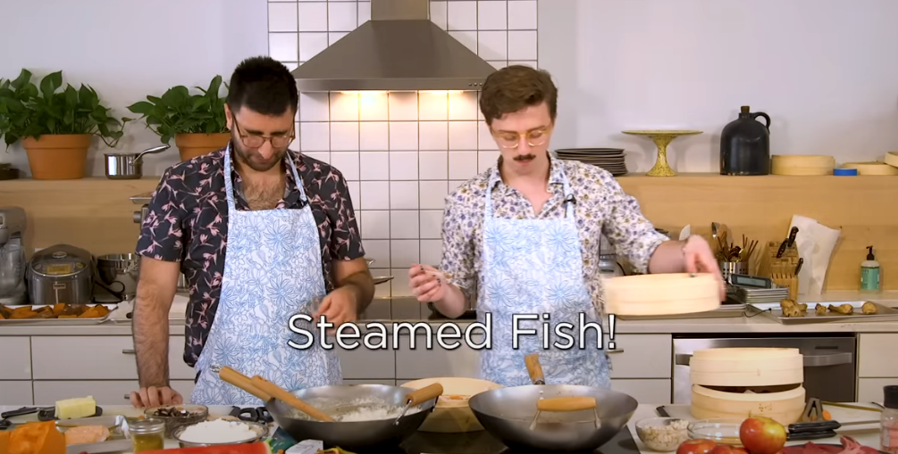

Highly Questionable Steamed Fish
It haunts me to this day.
- Any fish
- Any vegetable, herb, or flower
- Google how to filet a fish.
- Struggle to filet the fish.
- Steam the porgy with your ideally edible plant.
- Question why you've done this.
Rating: 1/10 Hearts
